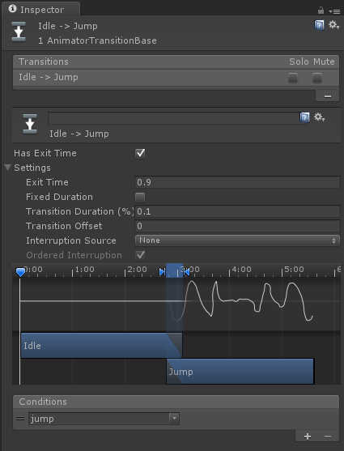
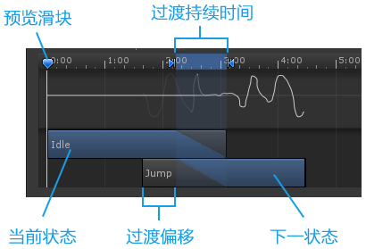

Unity3D的Mecanim动画系统之动画转换(三)
动画转换允许状态机从一个动画状态混合到另一个动画状态。转换不仅定义了状态之间的混合应该多长时间，而且定义了在什么条件下，他们应该激活。只有当某些条件为真时，才能建立过渡。要设置这些条件，需要指定动画控制器中参数的值。

属性
|
属性： |
功能： |
|
设置退出时间 (Has Exit Time) |
退出时间是一个特殊的过渡，不依赖于一个参数。使转移发生在指定的退出时间。使用归一化时间。 |
|
退出时间 (Exit Time) |
设置动画经过多长时间转换到下一个状态，如设置0.9，即经过此片段90%的时间后进行过度 |
|
固定持续时间 (Fixed Duration) |
如果选择，则转换时间以秒为单位解释。如果未检查固定的持续时间框，否则将转换时间解释为源状态的归一化时间的一部分。 |
|
过渡持续时间(Transition Duration) |
两个动画片段的过渡时间，即过渡图中的两个蓝色标记之间的部分。 |
|
过渡偏移 (Transition Offset) |
目标状态开始播放的偏移量 |
|
中断源 (Interruption Source) |
控制可能会中断此转换的情况： None：无 Current State：从当前状态队列转换。 Next State：从下一状态队列转换。 Current State then Next State：从当前状态队列，然后从下一个状态队列。 Next State then Current State：从下一个状态队列，然后从当前状态队列。 |
|
命令中断 (Ordered Interruption) |
确定当前转换是否可以被其他独立于它们的命令中断（不太理解） |
|
条件 (Conditions) |
控制动画转换的条件 |
注意：如果一个动画有Conditions建议取消Has Exit Time，会出现无法及时触发的问题。
Has Exit Time就是必须过度的时间，处于这个时间时，是不允许任何对动画的操作的。
过渡图

混合树状态之间的转换

如果属于此转换的当前或下一个状态为混合树状态，则混合树参数将出现。调整这些值，以预览如何过渡。调整这些值不会影响运行时的过渡行为，它们仅仅是为了帮助你预览在不同的情况下状态是如何过渡的。
如果您觉得本文不错，可以选择打赏。打赏多少，您高兴就行，谢谢您的支持！ ~(@^_^@)~